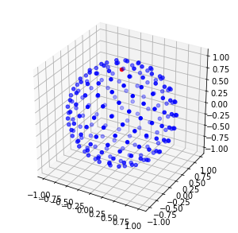

%matplotlib inline
import numpy as np
import scipy.linalg as la
import mpl_toolkits.mplot3d
import matplotlib.pyplot as plt
from scipy.spatial import cKDTree
import scipy.sparse as sp
from scipy.sparse.linalg import spsolve, lsqr
from numpy.linalg import condGenerate Nodes
n = 200
stencil_size = 30indices = np.arange(0, n, dtype=float) + 0.5
phi = np.arccos(1 - 2*indices/n)
theta = np.pi * (1 + 5**0.5) * indices
xs, ys, zs = np.cos(theta) * np.sin(phi), np.sin(theta) * np.sin(phi), np.cos(phi)
nodes = [(x,y,z) for x,y,z in zip(xs,ys,zs)]
projectors = [np.eye(3) - np.outer(node, node) for node in nodes]projectors[0]array([[ 0.99869013, 0.00336901, -0.0360112 ],
[ 0.00336901, 0.99133487, 0.09262123],
[-0.0360112 , 0.09262123, 0.009975 ]])# Plot nodes
fig = plt.figure(figsize=(5,5))
ax = fig.add_subplot(111, projection='3d')
ax.scatter(xs[1:], ys[1:], zs[1:], c='b')
ax.scatter(xs[0], ys[0], zs[0], c='r')
tree = cKDTree(np.array(nodes))
stencils = [tree.query(node, stencil_size)[1] for node in nodes]Functions
def dist(node1, node2):
return np.sqrt( (node1[0]-node2[0])**2 + (node1[1]-node2[1])**2 + (node1[2]-node2[2])**2 )
def rbf(node, node_center):
r = dist(node, node_center)
return r**5
def d_phi_dr_div_r(r):
return 5*r**3
def grad_rbf(node, node_center):
r = dist(node, node_center)
return d_phi_dr_div_r(r) * (np.array(node) - np.array(node_center))
Calculate Weights
weights = np.zeros((n, stencil_size))
row_index = [r for r in range(n) for c in range(stencil_size)]
col_index = np.zeros((n, stencil_size))
for i, stencil in enumerate(stencils):
col_index[i] = stencil
nn = [nodes[i] for i in stencil]
nn_Ps = [projectors[i] for i in stencil]
center_x, center_y, center_z = nn[0]
A = np.array([[rbf(node, node_center) for node in nn] for node_center in nn])
P = np.array([[1, x-center_x, y-center_y, z-center_z] for x,y,z in nn])
AP = np.block([[A,P],[P.T, np.zeros((4,4))]])
if i <10:
print('cond AP = %g' % cond(AP))
rhs_tops = np.array([ [ nn_P@grad_rbf(node, node_center)
for node_center, nn_P in zip(nn, nn_Ps)
] for node in nn] )
rhs_top = rhs_tops[:,:,0] # only the x coordinates
rhs = np.block([[rhs_top],
[np.zeros(stencil_size)],
[1-node[0]**2 for node in nn],
[-node[0]*node[1] for node in nn],
[-node[0]*node[2] for node in nn] ])
weights_grad = la.solve(AP, rhs)[:stencil_size,:].T
weights[i] = (weights_grad@weights_grad)[0]
rhs_top = rhs_tops[:,:,1] # only the y coordinates
rhs = np.block([[rhs_top],
[np.zeros(stencil_size)],
[-node[0]*node[1] for node in nn],
[1-node[1]**2 for node in nn],
[-node[1]*node[2] for node in nn] ])
weights_grad = la.solve(AP, rhs)[:stencil_size,:].T
weights[i] += (weights_grad@weights_grad)[0]
rhs_top = rhs_tops[:,:,2] # only the z coordinates
rhs = np.block([[rhs_top],
[np.zeros(stencil_size)],
[-node[0]*node[2] for node in nn],
[-node[1]*node[2] for node in nn],
[1-node[2]**2 for node in nn] ])
weights_grad = la.solve(AP, rhs)[:stencil_size,:].T
weights[i] += (weights_grad@weights_grad)[0]
C = sp.csc_matrix((weights.ravel(), (row_index, col_index.ravel())),shape=(n,n))cond AP = 52293.2
cond AP = 53912.8
cond AP = 94363
cond AP = 46490.4
cond AP = 53795.9
cond AP = 249101
cond AP = 54513.6
cond AP = 46709.7
cond AP = 46277.1
cond AP = 49504.8cond(C.todense())9.977358815491235e+17Extra Condition
Clam = sp.vstack( [sp.hstack([C, np.ones((n,1))], format='csr'),
np.block([np.ones((1,n)), np.zeros((1,1))]) ], format='csr')print(cond(Clam.todense()))2325354.218450661Solve
# l=1
def foo1(node):
return node[0]*2
def exact1(node):
return node[0]
# l=3
def foo2(node):
return (node[0]**2 - node[1]**2) * 6
def exact2(node):
return (node[0]**2 - node[1]**2)
def foo3(node):
return (node[0]**2 - node[1]**2) * node[2] * 12
def exact3(node):
return (node[0]**2 - node[1]**2) * node[2]
foo, exact = foo1, exact1rhs = [-foo(node) for node in nodes] + [0]
#u = lsqr(Clam, rhs)[0]
u = spsolve(Clam, rhs)
u = u[:-1]################################################################
#
# PHS
#
################################################################
u_true = np.array([exact(node) for node in nodes])
print(np.max(np.abs(u - u_true)/u_true))
print(np.min(u))
print(np.max(u))22.918160381373998
-0.09327014469292973
0.08635649581097074Plot Solution
fig = plt.figure(figsize=(10,5))
ax = fig.add_subplot(121, projection='3d')
ax.scatter(xs, ys, zs, c=u, cmap='coolwarm')
ax.set_title('Found')
plt.xlabel('x')
plt.ylabel('y')
ax = fig.add_subplot(122, projection='3d')
ax.scatter(xs, ys, zs, c=[exact(node) for node in nodes], cmap='coolwarm')
ax.set_title('Expected')
plt.xlabel('x')
plt.ylabel('y')Text(0.5,0,'y')Plot Expected Solution
fig = plt.figure(figsize=(8,8))
ax = fig.add_subplot(111, projection='3d')
ax.scatter(xs, ys, zs, c=[exact(node) for node in nodes], cmap='coolwarm')
plt.xlabel('x')
plt.ylabel('y')Text(0.5,0,'y')